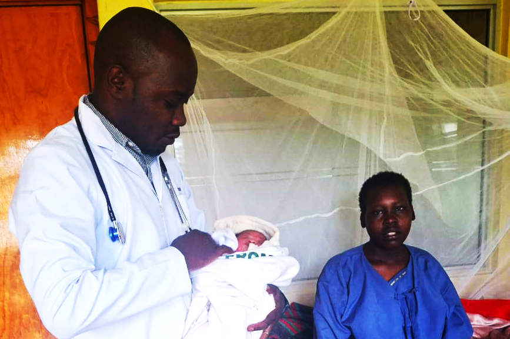
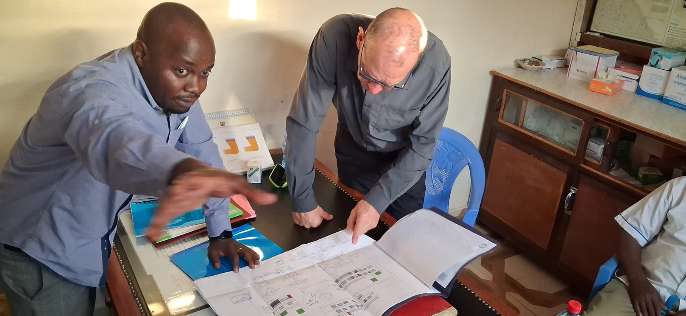
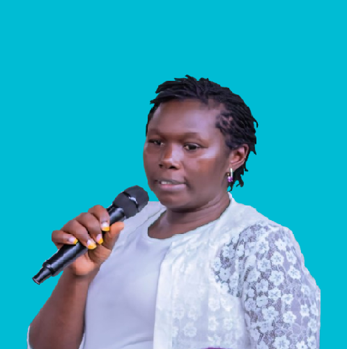
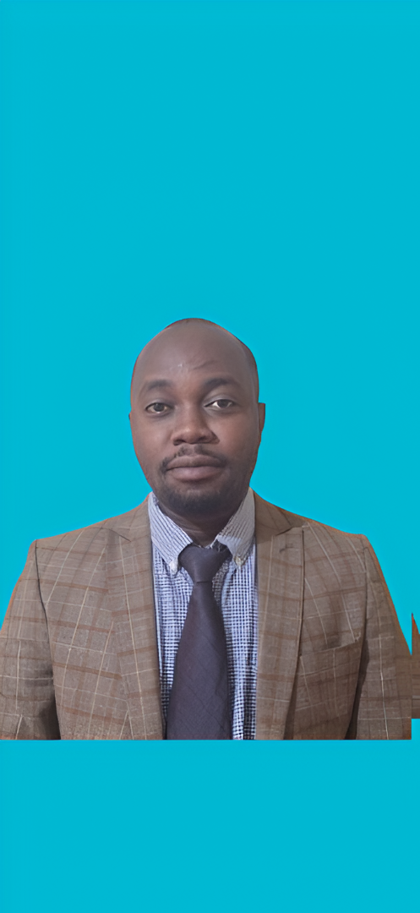
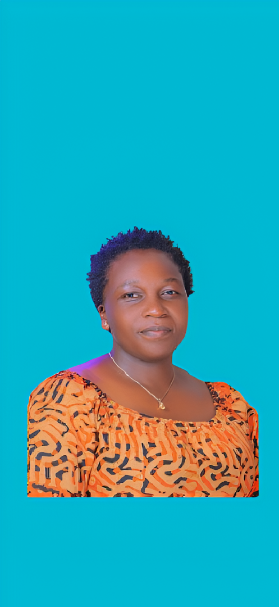
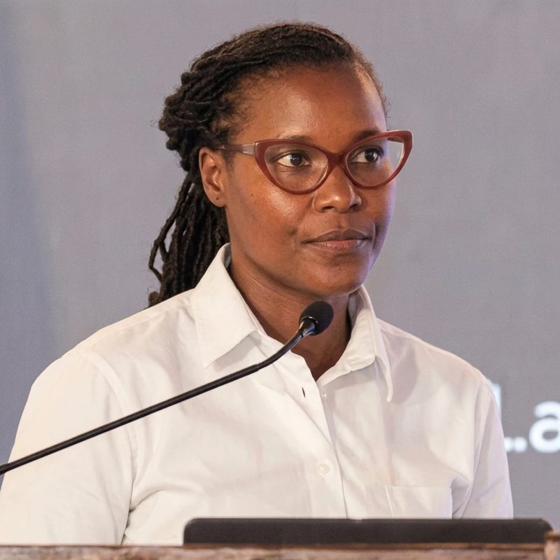

What We Do
The Lonah Maiko Foundation is dedicated to creating lasting change in communities through integrated development programs across education, health, and water, sanitation, and hygiene (WASH).





Our Mission and Vision
Our Mission
To improve the quality of life for disadvantaged communities in Africa through integrated development programs that prioritize education, health, and environmental sustainability.
Our Vision
A future where every child has access to quality education, every community has access to healthcare and clean water, and sustainable development creates opportunity for all.
Our Board
Meet the dedicated leaders guiding The Lonah Maiko Foundation

Lonah Maiko
Founder & CEO of The Lonah Maiko Foundation
She is a trained teacher with additional qualifications in Project Management and Counselling Psychology, bringing over 10 years of experience in the NGO sector- She has partnered with Global School Partners, Australia since 2016-2025. Her work with communities inspired her to establish the Lonah Maiko Foundation, driven by a strong passion for Education, Health, and WASH. With her passion, energy, empathy, and commitment to service, she leads LMF with a focus on integrity, meaningful partnerships, and lasting community impact.

Steve Onsase
Board Chair
Senior Medical Doctor and Registrar in Obstetrics and Gynecology
Board-certified Senior Medical Doctor and Registrar in Obstetrics and Gynecology with 10 years of progressive clinical experience. Highly skilled in reproductive health, maternal and neonatal care, emergency obstetrics, gynecologic procedures, and evidence-based practice. Demonstrates strong leadership, mentorship, and patient-centered care while actively practicing and contributing to improved health outcomes

Faith Moturi Mokonge
Board Member
Kenya Registered Nurse
Registered Nurse licensed by the Nursing Council of Kenya with 8 years in general nursing and 3 years in mental health. Skilled in psychiatric care, counseling, rehabilitation, and therapeutic support. Provides home visits, family support, and school mental health programs. Advocates for awareness, early diagnosis, prevention, and holistic care through therapy, support groups, communication, and family support.
Diana Ongera
Board Member
Certified Clinical and Community Nutritionist
With 9 years of experience in clinical and community health,dedicated to improving community health by focusing on nutrition, public health, and sanitation. She aims to educate people about healthy eating habits and the benefits of a balanced diet. She also advocates for safe sanitation practices and the proper use of clean water, raising awareness about its vital role in preventing disease. Through workshops, community events, and collaboration with local organizations, she strives to empower individuals with the knowledge and resources they need to lead healthier lives and foster a cleaner, safer environment for everyone.

Emily Osiemo
Board Member
Lawyer, Law Society of Kenya
Emily Osiemo is a dedicated lawyer registered with the Law Society of Kenya, with over six years of professional legal experience in corporate law, litigation, and legal advisory services. She brings strategic legal expertise and a commitment to supporting organizational governance and compliance.
Simon Carroll
Advisor / Consultant
CEO & Founder, Global School Partners (Australia)
Simon Carroll is the CEO and co-founder of Global School Partners, an Australian volunteer-run charity that links schools in Australia with schools in developing countries so students can learn from one another. He brings broad business and management experience, including around 15 years owning and running a group of pharmacies and senior management roles in a national not-for-profit. He supports LMF with strategic advice drawn from a long-standing partnership with Lonah Maiko.
The Lonah Maiko Foundation
The Lonah Maiko Foundation (LMF) is a community-centered organisation dedicated to improving the quality of life for children, families, and underserved communities in Kenya. Founded on the belief that every person deserves dignity, opportunity, and a healthy environment, LMF works to bridge gaps in Education, Health, and WASH (Water, Sanitation & Hygiene). We collaborate closely with schools, health facilities, local leaders, and partners to bring practical, sustainable solutions that directly transform lives. From supporting learners, promoting healthy communities, to advancing clean water and sanitation, our approach is rooted in compassion, transparency, and long-term impact. Guided by strong values and a passion for service, LMF continues to provide hope, empower communities, and create pathways for a brighter, more resilient future.
Stay Updated
Subscribe to our newsletter for updates on our programs and impact stories